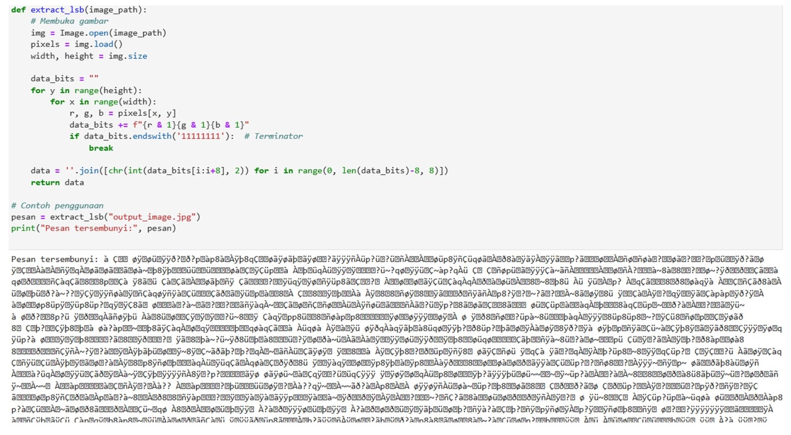
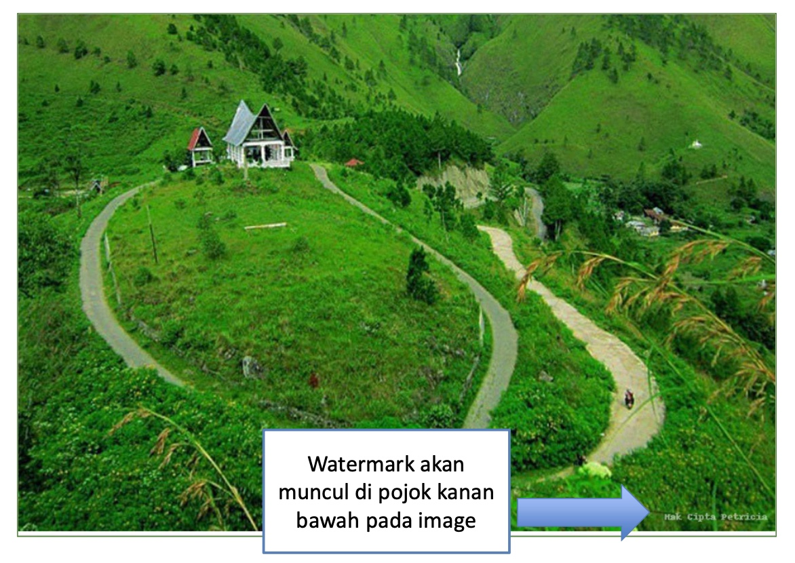

Pertemuan 13: PENGOLAHAN CITRA: STEGANOGRAFI DAN WATERMARKING
Materi ini membahas Steganografi dan Watermarking dalam Pengolahan Citra Digital
Sub-Topik:
- Pengertian Steganografi
- Pengertian Watermarking
Pengertian Steganografi
Steganografi berasal dari bahasa Yunani:'Steganos' = Tersembunyi dan 'Graphia' = Menulis pada zaman kuno, steganografi di lakukan dengan cara pesan tersembunyi di balik lilin. Lalu pada abad pertengahan, steganografi di lakukan menggunakan tinta tak terlihat. Pada era digital, steganografi di lakukan dengan media digital seperti gambar, audio, dan video. Steganografi juga dapat di lakukan dengan cara menggunakan algoritma dan kunci untuk mengekstraksi data, Blind Extraction dengan tidak memerlukan media asli, dan juga dengan Non-Blind Extraction yaitu dengan membutuhkan media asli untuk membandingkan dan mengekstrak data.
Teknik penyembunyian data
- Least Significant Bit (LSB): Menyisipkan data pada bit terkecil dengan perubahan tidak signifikan pada gambar visual.
- Transformasi Domain: Discrete Cosine Transform (DCT) dengan cara penyisipan di frekuensi gambar. Discrete Wavelet Transform (DWT) dengan cara penyisipan di transformasi gelombang.
- Adaptive Steganography: Menggunakan karakteristik gambar, seperti tepi atau tekstur.
Contoh Penerapannya Pada Program

Gambar 13.1: Kode Implementasi Steganografi
Gambar 13.2: Kode & Output Implementasi Steganografi
Pengertian Watermarking
Watermarking adalah teknik penyisipan informasi (hak cipta atau keaslian) ke dalam media digital. Dengan memiliki beberapa jenis seperti Visible Watermarking yang watermarknya terlihat jelas, lalu Invisible Watermarking yang watermarknya tersembunyi dan tidak terlihat.
Contoh Penerapannya Pada Program

Gambar 12.3: Kode Implementasi Watermarking
Gambar 12.4: Output Implementasi Watermarking